Motion, Pressure, and Flow Sensors
Instruments 5.2
Imron Rosyadi
Learning Objectives
By the end of this session, you should be able to:
- Relate position, velocity, and acceleration for motion and vibration, and compute peak values.
- Explain the spring–mass principle of accelerometers, including natural frequency and damping.
- Compare common accelerometer types and choose a suitable one for an application.
- Distinguish between static, dynamic, gauge, and head pressure; convert between units.
- Describe how diaphragms, bellows, Bourdon tubes, and solid‑state ICs turn pressure into electrical signals.
- Relate pressure and flow in pipes, and understand how restriction and obstruction flow meters work.
Tip
Instrumentation theme: almost every sensor converts the quantity of interest into displacement, then into electrical signals.
Outline
- Motion basics and types of motion
- Vibration and shock; numerical examples
- Spring–mass accelerometer, natural frequency, and vibration response
- Practical accelerometer types and applications
- Pressure principles and pressure sensors
- Liquid / solid flow measurement basics
4.1 Motion: From Position to Acceleration
If the position of an object is \(x(t)\):
Velocity (with direction) is the first derivative:
\[v(t) = \frac{dx(t)}{dt} \tag{16}\]
Acceleration is the derivative of velocity (or second derivative of position):
\[a(t) = \frac{dv(t)}{dt} = \frac{d^{2}x(t)}{dt^{2}} \tag{17}\]
For instrumentation, we often measure acceleration directly and recover velocity and position by integration:
\[v(t) = v(0) + \int_{0}^{t} a(\tau)\, d\tau \tag{18}\]
\[x(t) = x(0) + \int_{0}^{t} v(\tau)\, d\tau \tag{19}\]
Interactive: Integrating Acceleration in Python
Assume a constant acceleration and numerically integrate to see how velocity and position evolve.
Acceleration and the “g” Unit
SI units:
- Position: meters (m)
- Velocity: meters per second (m/s)
- Acceleration: meters per second squared (m/s²)
A very convenient reference is the acceleration due to gravity at Earth’s surface:
- \(g \approx 9.8~\mathrm{m/s^{2}}\)
We often express accelerations as multiples of \(g\):
\[a_{\mathbf{g}} = \frac{a}{g}\]
Example: \(a = 19.6~\mathrm{m/s^{2}} \Rightarrow a_{\mathbf{g}} \approx 2~\mathrm{g}\)
Example 11 – Unit Conversion to SI and g
An automobile accelerates at \(26.4~\mathrm{ft/s^{2}}\). Convert to:
- \(\mathrm{m/s^{2}}\)
- g’s
Solution
Use \(1~\mathrm{ft} = 12~\mathrm{in}\) , \(1~\mathrm{in} = 2.54~\mathrm{cm}\) , \(1~\mathrm{cm} = 0.01~\mathrm{m}\):
\[ a = (26.4~\mathrm{ft/s^{2}})(12~\mathrm{in/ft})(2.54~\mathrm{cm/in})(0.01~\mathrm{m/cm}) \]
\[ a = 8.05~\mathrm{m/s^{2}} \]
In terms of g’s:
\[ a_{\mathbf{g}} = \frac{8.05~\mathrm{m/s^{2}}}{9.8~\mathrm{m/s^{2}/g}} \approx 0.82~\mathrm{g} \]
So the car pulls about \(82\%\) of one g during acceleration.
Interactive: Try Your Own Acceleration Conversion
Types of Motion Relevant to Sensors
- Rectilinear – straight‑line motion (e.g., car accelerating / braking).
- Angular – pure rotation about an axis (e.g., motor shaft, gyro).
- Vibration – periodic motion around an equilibrium point, possibly very large peak accelerations.
- Shock – short‑duration, high‑magnitude deceleration, often hundreds of g’s.
Each type may use a different sensor or measurement strategy.
Vibration: Sinusoidal Motion Model
For vibration analysis, position is often modeled as:
\[ x(t) = x_{0} \sin(\omega t) \tag{20} \]
- \(x(t)\) – position (m)
- \(x_{0}\) – peak displacement from equilibrium (m)
- \(\omega\) – angular frequency (rad/s)
Relationship to frequency \(f\) in Hz:
\[ \omega = 2\pi f \tag{21} \]
Derivatives give:
Velocity:
\[v(t) = \omega x_{0} \cos(\omega t) \tag{22}\]
Acceleration:
\[a(t) = -\omega^{2} x_{0} \sin(\omega t) \tag{23}\]
Peak acceleration magnitude:
\[ a_{\text{peak}} = \omega^{2} x_{0} \tag{24} \]
Important
Note the \(\omega^{2}\) term: small increases in frequency can cause very large increases in peak acceleration, even for small displacements.
Real‑World Vibration Example
FIGURE 21 – An object in periodic motion about an equilibrium at \(x = 0\) with peak displacement \(x_0\).
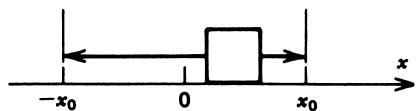
Example 12 – Pipe Vibration
A water pipe vibrates at \(f = 10~\mathrm{Hz}\) with displacement \(x_{0} = 0.5~\mathrm{cm}\).
Find:
- Peak acceleration in \(\mathrm{m/s^{2}}\)
- Peak acceleration in g’s
Solution
Use \(a_{\text{peak}} = \omega^{2} x_{0}\) with \(\omega = 2\pi f\):
- \(\omega = 2\pi(10) = 20\pi~\mathrm{rad/s}\)
- \(x_{0} = 0.5~\mathrm{cm} = 0.005~\mathrm{m}\)
\[ a_{\text{peak}} = (20\pi)^{2}(0.005) \approx 19.7~\mathrm{m/s^{2}} \]
In g’s:
\[ a_{\text{peak,g}} = \frac{19.7}{9.8} \approx 2.0~\mathrm{g} \]
So a modest‑looking vibration can be a 2 g excitation—potentially destructive for mechanical parts.
Interactive: Explore Vibration Peak Acceleration
Shock: Short, Intense Deceleration
Shock is characterized by:
- Very short duration (milliseconds)
- Very high peak deceleration (often > 500 g)
Typical acceleration‑vs‑time profile:
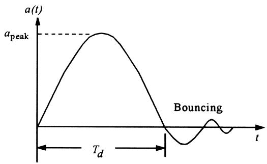
Key parameters:
- \(a_{\text{peak}}\) – peak deceleration (g)
- \(T_{d}\) – shock duration (s)
- Bouncing or ringing afterward
Average deceleration during shock:
\[ \bar{a} \approx \frac{\Delta v}{T_{d}} \]
Example 13 – Dropped TV Shock
A TV set is dropped from height \(h = 2~\mathrm{m}\). Shock duration when it hits the ground is \(T_{d} = 5~\mathrm{ms}\).
Find the average shock in g’s.
Solution
Compute impact velocity using \(v^{2} = 2 g x\):
\[ v^{2} = 2 (9.8)(2.0) \Rightarrow v \approx 6.3~\mathrm{m/s} \]
Average deceleration:
\[ \bar{a} = \frac{v}{T_{d}} = \frac{6.3}{5\times 10^{-3}} \approx 1260~\mathrm{m/s^{2}} \]
Convert to g’s:
\[ \bar{a}_{\mathbf{g}} \approx \frac{1260}{9.8} \approx 128~\mathrm{g} \]
No wonder the TV smashes.
4.2 Spring–Mass Accelerometer Principle
Use two basic laws:
- Newton’s 2nd law: \(F = ma\)
- Hooke’s law: \(F = k \Delta x\) for a spring
Combine them:
\[ ma = k \Delta x \tag{25} \]
Solve for acceleration:
\[ a = \frac{k}{m} \Delta x \tag{26} \]
So acceleration measurement reduces to displacement measurement of the spring by sensing \(\Delta x\).
- \(k\) – spring constant (N/m)
- \(m\) – seismic (test) mass (kg)
- \(\Delta x\) – spring extension / compression relative to equilibrium (m)
Spring–Mass Accelerometer Diagram
FIGURE 23 – Basic spring–mass system accelerometer.
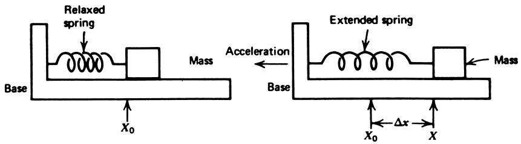
- No acceleration: spring unextended.
- Base accelerated: spring extends to provide force \(F = ma\).
If acceleration direction reverses, the spring compresses instead, but Equation (26) still holds (sign changes).
Natural Frequency of Spring–Mass Systems
Real spring–mass systems oscillate if disturbed. Their natural frequency is:
\[ f_{N} = \frac{1}{2\pi}\sqrt{\frac{k}{m}} \tag{27} \]
- \(f_{N}\) – natural frequency (Hz)
- \(k\) – spring constant (N/m)
- \(m\) – mass (kg)
With damping \(\alpha~(\mathrm{s^{-1}})\), the transient displacement after an impulse is:
\[ X_{T}(t) = X_{0} e^{-\alpha t} \sin(2\pi f_{N} t) \tag{28} \]
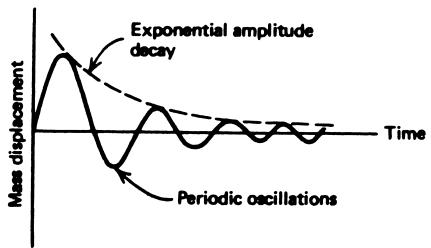
Warning
If your input vibration frequency is near \(f_{N}\), the mass motion can become very large (resonance), saturate or hit mechanical stops, and distort your measurements.
Vibration Response of Spring–Mass Accelerometer
Consider the accelerometer bolted to a vibrating table:
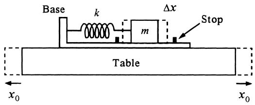
Table motion:
\[ x_{\text{table}}(t) = x_{0}\sin(\omega t) \]
Table acceleration:
\[ a(t) = -\omega^{2}x_{0}\sin(\omega t) \]
From \(ma = k\Delta x\) we get mass motion:
\[ \Delta x = -\frac{m x_{0}}{k}\omega^{2}\sin(\omega t) \tag{29} \]
Prediction from this simple model:
- \(\Delta x_{\text{peak}} \propto \omega^{2} x_{0}\)
But this ignores the system’s own natural vibration.
Actual Frequency Response vs Simple Prediction
FIGURE 26 – Comparison of actual vs ideal response.
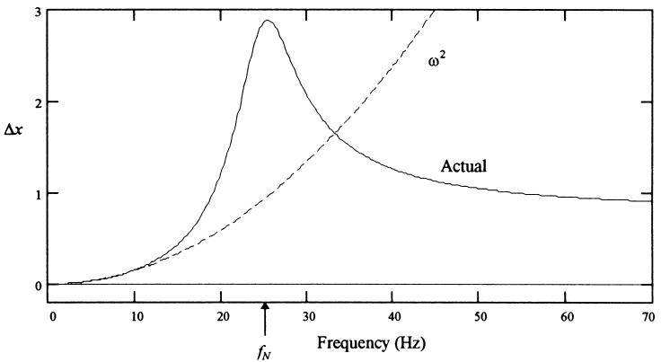
- Below resonance: behaves like accelerometer, \(\Delta x \propto \omega^{2} x_{0}\) (Equation 29).
- Near resonance: huge peak, limited mechanically by stops (nonlinear).
- Well above resonance: mass is almost stationary, housing vibrates around it → becomes displacement sensor.
Rule‑of‑thumb:
Acceleration mode (use as accelerometer):
\[f < \frac{f_{N}}{2.5}\]
Displacement mode (measure \(x_{0}\)):
\[f > 2.5 f_{N}\]
Example 14 – Spring–Mass Accelerometer Specs
An accelerometer has:
- \(m = 0.05~\mathrm{kg}\)
- \(k = 3.0 \times 10^{3}~\mathrm{N/m}\)
- Max displacement before hitting stops: \(\Delta x_{\max} = \pm 0.02~\mathrm{m}\)
Find:
- Maximum measurable acceleration in g’s
- Natural frequency \(f_{N}\)
Solution (a)
From \(a = (k/m)\Delta x\):
\[ a_{\max} = \frac{3.0\times 10^{3}}{0.05}(0.02) = 1200~\mathrm{m/s^{2}} \]
Convert to g’s:
\[ a_{\max,g} = \frac{1200}{9.8} \approx 122~\mathrm{g} \]
Solution (b)
Natural frequency:
\[ f_{N} = \frac{1}{2\pi}\sqrt{\frac{3.0\times 10^{3}}{0.05}} \approx 39~\mathrm{Hz} \]
So this unit can, in principle, handle up to about \(122~\mathrm{g}\), but only for frequencies well below \(39/2.5 \approx 15~\mathrm{Hz}\) if used in acceleration mode.
Interactive: Compute Natural Frequency and Range
4.3 Types of Accelerometers
Different applications → different requirements in:
- Range (max g)
- Bandwidth / natural frequency
- Damping
- Output type (voltage, charge, resistance)
Common types:
- Potentiometric
- LVDT‑based
- Variable reluctance (magnetic)
- Piezoelectric
Potentiometric Accelerometer
- Spring–mass system with the mass mechanically linked to a potentiometer wiper.
- Displacement → resistance change.
- Requires signal conditioning (e.g., Wheatstone bridge, buffer amp).
- Typical \(f_{N} < 30~\mathrm{Hz}\) → suited for steady‑state and low‑frequency motion.
LVDT‑Based Accelerometer
FIGURE 27 – LVDT used as accelerometer, core is the mass.
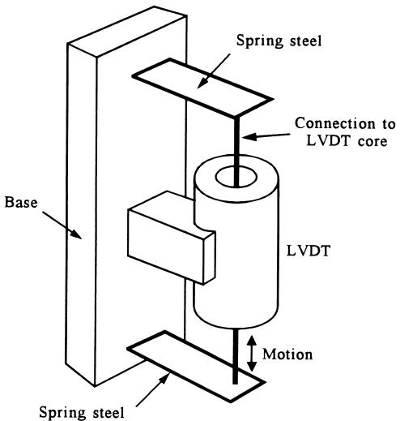
- Core acts as seismic mass.
- Core displacement → AC output proportional to displacement.
- Typical \(f_{N} < 80~\mathrm{Hz}\) → low‑frequency vibration, steady acceleration.
- Very linear displacement → voltage relationship.
Variable Reluctance (Magnetic) Accelerometer
- Seismic mass is a small permanent magnet.
- Motion of magnet induces voltage in a coil.
- Output only when mass is moving → good for vibration and shock, not static acceleration.
- Natural frequencies: typically \(< 100~\mathrm{Hz}\).
- Used in geophones (oil exploration, seismic surveys).
Piezoelectric Accelerometer
FIGURE 28 – Piezoelectric accelerometer.
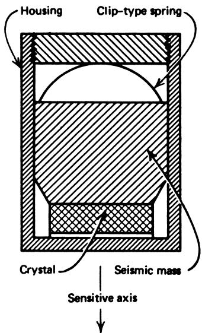
- Seismic mass presses on a piezoelectric crystal.
- Force from acceleration (\(F = ma\)) → mechanical stress → charge / voltage output.
- Very high natural frequency (often \(> 5~\mathrm{kHz}\)):
- Excellent for vibration and shock.
- Poor for DC or slow, steady acceleration (output decays; acts like high‑pass).
- Needs high‑input‑impedance, low‑noise amplifier; outputs are typically mV‑level.
Choosing an Accelerometer – Application View
Steady / slowly varying acceleration
- Automotive braking, elevator motion
- Need DC response, low \(f_{N}\) is OK
- Use potentiometric or LVDT types (or MEMS with DC response)
Vibration and shock
- Machine diagnostics, drop tests, impact analysis
- Need high bandwidth (> 1 kHz), high g range
- Use piezoelectric, or variable‑reluctance for some vibration ranges
4.4 Accelerometer Applications – Velocity via Integration
Recall Example 15: Accelerometer output: \(14~\mathrm{mV/g}\).
Goal: design signal‑conditioning so that output velocity signal is \(0.25~\mathrm{V}\) per \((\mathrm{m/s})\).
Strategy:
- Convert acceleration (g) → voltage.
- Integrate voltage to get velocity.
- Add gain / inversion to make scale factor and polarity correct.
Example 15 – From Acceleration to Velocity Voltage
Given:
- Sensor: \(14~\mathrm{mV/g}\)
- \(1~\mathrm{g} = 9.8~\mathrm{m/s^{2}}\)
So:
\[ K = 14~\mathrm{mV/g} \cdot \frac{1~\mathrm{g}}{9.8~\mathrm{m/s^{2}}} = 1.43~\mathrm{mV}/(\mathrm{m/s^{2}}) \]
Let \(V_{a} = Ka\) be sensor output.
Feed into op‑amp integrator:
\[ V_{v} = -\frac{1}{RC}\int V_{a}\, dt = -\frac{K}{RC}\int a\, dt = -\frac{K}{RC}v \]
Then use an inverting amplifier with gain \(R_{2}/R_{1}\):
\[ V_{\text{out}} = \left(\frac{R_{2}}{R_{1}}\right)\frac{K}{RC}v \]
We want: \(V_{\text{out}} = 0.25 v\).
Example choice:
\(R = 1~\mathrm{M\Omega}\) , \(C = 1~\mu\mathrm{F} \Rightarrow RC = 1\)
Then
\[ 0.25 = \left(\frac{R_{2}}{R_{1}}\right)K \]
\[ \frac{R_{2}}{R_{1}} = \frac{0.25}{1.43\times 10^{-3}} \approx 175 \]
Take \(R_{1} = 1~\mathrm{k\Omega}\) , \(R_{2} = 175~\mathrm{k\Omega}\).
5. Pressure Principles – What is Pressure?
Pressure is force per unit area exerted by a fluid (liquid or gas) on surfaces:
- SI: \(1~\mathrm{Pa} = 1~\mathrm{N/m^{2}}\)
- Common multiples: kPa, MPa
- English: psi \((\mathrm{lb/in^{2}})\)
For gases, pressure is roughly uniform in a closed container. For liquids, static pressure increases with depth.
Static vs Dynamic Pressure
- Static pressure: fluid not moving (or slow, simple conditions). E.g., water in a tank at rest.
- Dynamic pressure: fluid in motion; pressure depends on velocity, flow regime, etc.
For example:
- Hose with nozzle closed: high static pressure (e.g., \(40~\mathrm{psi}\)).
- Nozzle open: water flows; measured pressure may drop (e.g., to \(30~\mathrm{psi}\)).
Instrumentation must always state under what conditions (flow, height, etc.) pressure is measured.
Pressure Units and Conversions
Common units:
- \(\mathrm{Pa}\) (N/m²) – SI base unit
- \(\mathrm{kPa}\), \(\mathrm{MPa}\)
- \(\mathrm{psi}\) – pounds per square inch
- Torr – low pressure, vacuum (\(1~\mathrm{torr}\approx 133.3~\mathrm{Pa}\))
- atm – standard atmosphere (\(1~\mathrm{atm}=101.325~\mathrm{kPa}\approx 14.7~\mathrm{psi}\))
- bar – \(1~\mathrm{bar} = 100~\mathrm{kPa}\)
Rough conversion:
\[ 1~\mathrm{psi} \approx 6.895~\mathrm{kPa} \]
Gauge Pressure vs Absolute Pressure
Often we care about pressure relative to atmospheric.
Gauge pressure:
\[ p_{g} = p_{\text{abs}} - p_{\text{at}} \tag{30} \]
- \(p_{g}\) – gauge pressure (0 at atmosphere)
- \(p_{\text{abs}}\) – absolute pressure (zero in a perfect vacuum)
- \(p_{\text{at}}\) – atmospheric pressure
In English units, gauge pressure is often written as psig.
Head Pressure (Pressure Head)
For a liquid of density \(\rho\) and depth \(h\), static pressure at depth is:
SI form:
\[ p = \rho g h \tag{31} \]
- \(p\) – pressure (Pa)
- \(\rho\) – density (kg/m³)
- \(g \approx 9.8~\mathrm{m/s^{2}}\)
- \(h\) – depth (m)
English form using weight density \(\rho_{w}~(\mathrm{lb/ft^{3}})\):
\[ p = \rho_{w} h \tag{32} \]
- \(p\) – pressure (\(\mathrm{lb/ft^{2}}\))
Conversion to psi: divide by \(144\) (since \(1~\mathrm{ft^{2}} = 144~\mathrm{in^{2}}\)).
Example 16 – Water Depth and Pressure
Water depth \(h = 7.0~\mathrm{ft}\). Find pressure at tank bottom:
- In Pa
- In psi
Given density \(\rho = 10^{3}~\mathrm{kg/m^{3}}\).
Solution (Pa)
Convert depth: \((7.0~\mathrm{ft})(0.3048~\mathrm{m/ft}) = 2.1~\mathrm{m}\).
\[ p = \rho g h = (10^{3})(9.8)(2.1) \approx 2.1\times 10^{4}~\mathrm{Pa} = 21~\mathrm{kPa} \]
Solution (psi)
Use weight density:
\[ \rho_{w} = (10^{3}~\mathrm{kg/m^{3}})(9.8~\mathrm{m/s^{2}}) = 9.8\times 10^{3}~\mathrm{N/m^{3}} \]
Convert to \(\mathrm{lb/ft^{3}}\) (result \(\approx 62.4~\mathrm{lb/ft^{3}}\)).
Then:
\[ p = (62.4)(7.0) = 437~\mathrm{lb/ft^{2}} \]
\[ p_{\text{psi}} = \frac{437}{144} \approx 3.0~\mathrm{psi} \]
5.2 Pressure Sensors (Above 1 atm) – Diaphragm and Bellows
Converting pressure to displacement:
Diaphragm – thin, flexible metal membrane; deflects under pressure difference.
\[ F = (p_{2} - p_{1}) A \tag{33} \]
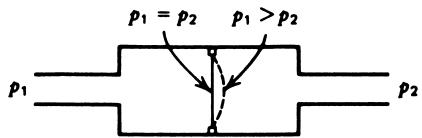
Diaphragm pressure sensor Bellows – accordion‑like cylinder; extends / contracts linearly with \(\Delta p\).
Often coupled to LVDT or other displacement sensor.
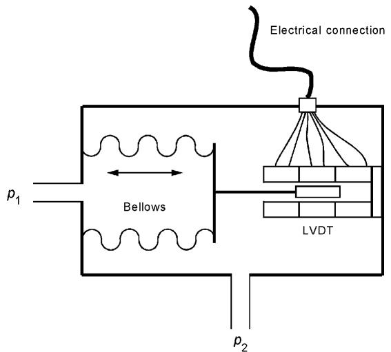
Bellows with LVDT
Displacement → electrical signal via LVDT, strain gauges, or potentiometers.
Bourdon Tube – Ubiquitous Mechanical Pressure Gauge
FIGURE 32 – Bourdon tube fabrication and operation.
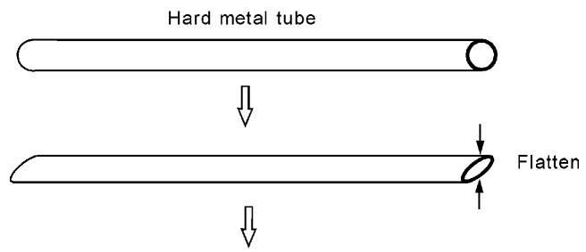
- Flattened metal tube, bent into an arc or spiral, sealed at one end.
- Pressure inside vs outside causes tube to straighten or curve more.
- Free end motion:
- Drives a pointer (mechanical gauge), or
- Is measured by electrical displacement sensor for process control.
Very common in industrial pressure gauges.
Electronic Conversions of Pressure → Signal
- Potentiometric linkage: motion rotates / slides a potentiometer; voltage divider outputs proportional signal.
- Strain gauges: glued to diaphragm or flexures; change resistance with stress; measured via Wheatstone bridge.
- Inductive approaches: LVDTs and variable inductance sensors track diaphragm / bellows motion.
Often combined with feedback (e.g., differential pressure cells) to minimize diaphragm deflection and linearize response.
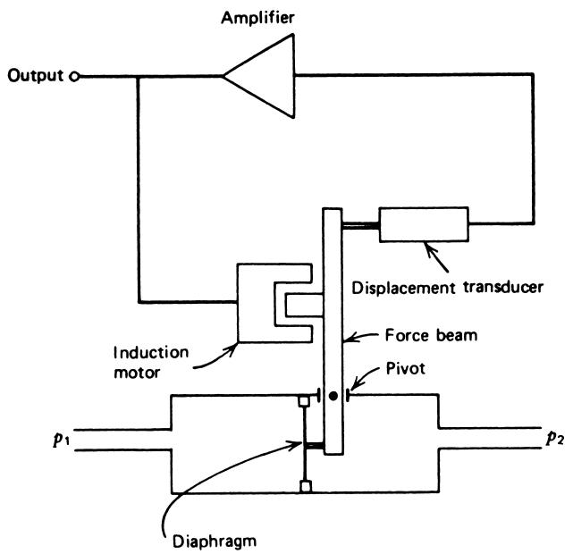
Solid‑State (IC) Pressure Sensors
FIGURE 34 – Solid‑state (SS) pressure sensor.
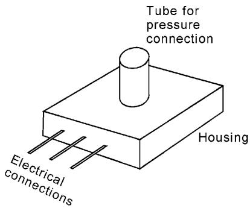
- Silicon die acts as diaphragm.
- Semiconductor strain gauges integrated on diaphragm.
- On‑chip signal conditioning (temp compensation, amplification).
- Three electrical pins: Vcc, GND, output.
- Pressure applied via small port.
Characteristics:
- Sensitivity: ~10–100 mV/kPa.
- Response time ~10 ms (10–90% step response).
- Linear V–p in specified range.
- Convenient for low‑pressure, embedded applications (appliances, HVAC, automotive MAP sensors).
Gauge vs Absolute vs Differential SS Sensors
FIGURE 35 – Modifications of SS pressure cell.
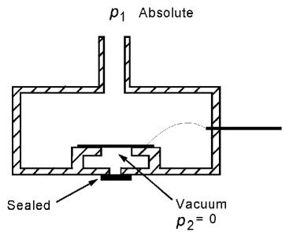
- Gauge pressure: one side open to atmosphere.
- Absolute pressure: reference side sealed and evacuated.
- Differential pressure: both sides accessible, measure \(p_{1} - p_{2}\).
Example 17 – SS Sensor for Level Measurement
Given:
- SS sensor: \(25~\mathrm{mV/kPa}\) , range \(0\)–\(25~\mathrm{kPa}\).
- Liquid density: \(\rho = 1.3\times 10^{3}~\mathrm{kg/m^{3}}\).
- Height range: \(0\)–\(2.0~\mathrm{m}\).
Attach sensor at bottom → pressure from Equation (31):
At \(h = 2.0~\mathrm{m}\)
\[ p = \rho g h = (1.3\times 10^{3})(9.8)(2.0) = 25.48~\mathrm{kPa} \]
Apply sensor sensitivity:
\[ V = (25~\mathrm{mV/kPa})(25.48~\mathrm{kPa}) \approx 0.637~\mathrm{V} \]
So level 0–2.0 m → output 0–0.637 V.
Sensitivity in \(\mathrm{mV/cm}\):
2.0 m = 200 cm, so
\[ S = \frac{637~\mathrm{mV}}{200~\mathrm{cm}} \approx 3.19~\mathrm{mV/cm} \]
5.3 Low‑Pressure (Vacuum) Gauges
For pressures below 1 atm, especially in vacuum systems:
Pirani gauge – heated filament; cooling depends on gas density; measure filament resistance in a bridge circuit. Highly nonlinear; gas‑type dependent.
Thermocouple gauge – measures filament temperature via attached thermocouple; ambient serves as reference; output voltage vs pressure is nonlinear, gas‑dependent.
Ionization gauge – very low pressures (\(10^{-3}\) to \(10^{-13}\) atm).
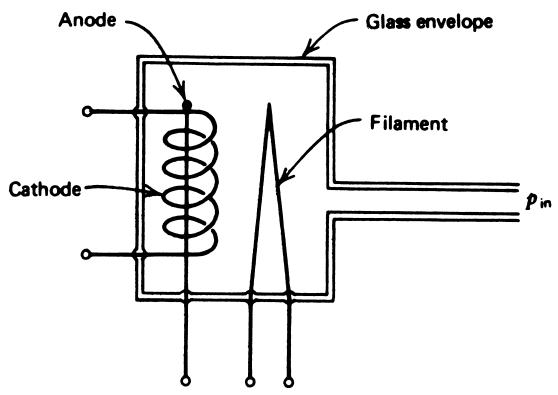
Ionization gauge concept - Electrons from heated filament ionize gas.
- Measure ion current between electrodes → proportional to gas density → pressure.
ECE angle: these are interesting because they rely on electronic transport and thermals rather than mechanical deflection.
6. Flow Sensors – Big Picture
Flow is everywhere in process industries:
- Solids (conveyor belts, powders)
- Liquids (water, chemicals, slurries)
- Gases (air, steam, combustion gases)
Instrumentation tasks:
- Define what “flow” means for the application (volume, mass, velocity).
- Convert flow into measurable quantity: often pressure difference or displacement.
6.1 Solid Flow – Conveyor Example
Typical situation: particulate solids (e.g., coal) on a conveyor belt.
FIGURE 37 – Conveyor system flow measurement.
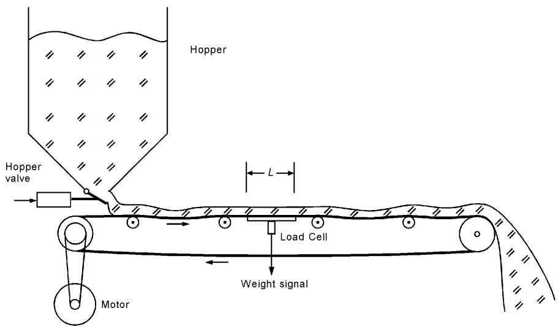
Flow rate in mass or weight per unit time:
\[ Q = \frac{W R}{L} \tag{34} \]
- \(W\) – weight of material on platform length \(L\)
- \(R\) – conveyor speed
- \(L\) – length of weighing platform
Sensors:
- Load cell under platform (strain gauge).
- LVDT to measure conveyor “droop”.
Example 18 – Coal Conveyor
Conveyor speed: \(R = 100~\mathrm{ft/min}\). Weighing platform length: \(L = 5.0~\mathrm{ft}\). Measured coal on platform: \(W = 75~\mathrm{lb}\).
Find flow rate in \(\mathrm{lb/h}\).
Solution
\[ Q = \frac{(75~\mathrm{lb})(100~\mathrm{ft/min})}{5~\mathrm{ft}} = 1500~\mathrm{lb/min} \]
Convert to \(\mathrm{lb/h}\):
\[ Q = (1500~\mathrm{lb/min})(60~\mathrm{min/h}) = 90{,}000~\mathrm{lb/h} \]
6.2 Liquid Flow – Definitions
Common descriptions:
Volume flow rate \(Q\) – volume per unit time (e.g., \(\mathrm{m^{3}/h}\) , \(\mathrm{gal/min}\)).
Flow velocity \(V\) – linear speed of fluid in pipe (e.g., m/s).
Related by cross‑sectional area \(A\):
\[ V = \frac{Q}{A} \tag{35} \]
Mass or weight flow rate \(F\) – mass or weight per unit time (kg/h, lb/h).
Related by density:
\[ F = \rho Q \tag{36} \]
Example 19 – Water Flow in Pipe
Water in a \(1.5~\mathrm{in}\) diameter pipe, flow velocity \(V = 2.5~\mathrm{ft/s}\).
Given: weight density \(\rho_{w} = 62.4~\mathrm{lb/ft^{3}}\).
Find:
- Volume flow rate in \(\mathrm{ft^{3}/min}\) (and gal/min).
- Weight flow rate in \(\mathrm{lb/min}\).
Solution
Diameter: \(d = 1.5~\mathrm{in} = 0.125~\mathrm{ft}\).
Area:
\[ A = \frac{\pi d^{2}}{4} = \frac{\pi (0.125)^{2}}{4} \approx 0.0122~\mathrm{ft^{2}} \]
Volume flow:
\[ Q = V A = (2.5~\mathrm{ft/s})(0.0122~\mathrm{ft^{2}})(60~\mathrm{s/min}) \approx 1.8~\mathrm{ft^{3}/min} \]
Convert to gal/min:
- \(1~\mathrm{gal} = 231~\mathrm{in^{3}}\)
- \(1~\mathrm{ft^{3}} \approx 7.48~\mathrm{gal}\)
- \(1.8~\mathrm{ft^{3}/min} \approx 13.5~\mathrm{gal/min}\)
Weight flow:
\[ F = \rho_{w} Q = (62.4)(1.8) \approx 112~\mathrm{lb/min} \]
Pipe Flow and Head
FIGURE 38 – Flow through pipe driven by tank head \(h\).
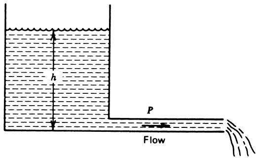
Flow rate depends on:
- Pressure at inlet (related to head \(h\)).
- Pipe diameter and length.
- Roughness and viscosity (friction).
- Flow regime (laminar vs turbulent).
Instrumentation typically measures pressure differences and infers flow via calibration and known formulas.
Restriction‑Based Flow Sensors
Introduce a restriction; measure pressure drop \(\Delta p\) across it.
Idea: higher flow → higher velocity in restriction → larger \(\Delta p\).
General relationship:
\[ Q = K \sqrt{\Delta p} \tag{37} \]
- \(K\) – constant depending on orifice geometry, fluid properties, pipe size, etc.
Common restrictions:
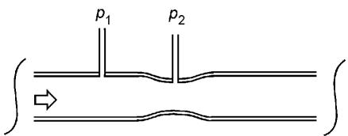
- Venturi
- Flow nozzle
- Orifice plate
Example 20 – Orifice Plate Flow Measurement
Given:
- Desired flow range: 20–150 gal/min.
- Orifice plate: \(K = 119.5~(\mathrm{gal/min})/\mathrm{psi}^{1/2}\).
- Pressure difference measured by bellows + LVDT: \(1.8~\mathrm{V/psi}\).
Find the output voltage range for given flow range.
Solution
From \(Q = K\sqrt{\Delta p}\),
\[ \Delta p = \left(\frac{Q}{K}\right)^{2} \]
For \(Q = 20~\mathrm{gal/min}\):
\[ \Delta p = \left(\frac{20}{119.5}\right)^{2} \approx 0.0280~\mathrm{psi} \]
For \(Q = 150~\mathrm{gal/min}\):
\[ \Delta p = \left(\frac{150}{119.5}\right)^{2} \approx 1.576~\mathrm{psi} \]
Voltage outputs:
- Low end: \(V = 0.0280 \times 1.8 \approx 0.050~\mathrm{V}\)
- High end: \(V = 1.576 \times 1.8 \approx 2.84~\mathrm{V}\)
Pitot Tube – Point Flow Measurement
FIGURE 40 – Pitot tube in a flow stream.
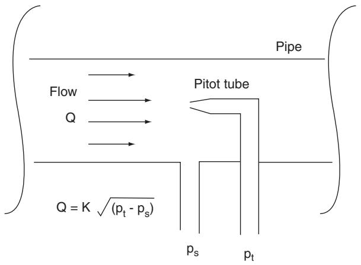
- Tube points into flow; fluid inside is brought to rest.
- Pressure in tube = static pressure + dynamic (velocity) pressure.
- Measure difference between pitot pressure and static line:
- \(\Delta p \propto \rho V^{2}\)
- So \(V \propto \sqrt{\Delta p}\).
Flow in pipe varies across cross‑section, so pitot measures velocity at its insertion point. Multiple measurements or assumptions about profile may be needed for total flow.
Obstruction Flow Meters
FIGURE 41 – Examples.
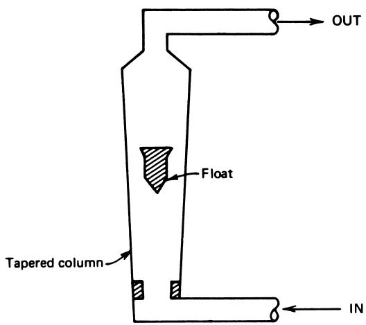
- Rotameter (a): float in tapered vertical tube; float rises until pressure drop balances weight; height ∝ flow.
- Moving vane (b): vane deflected by flow; angle ∝ flow; angle measured by sensor.
- Turbine meter (c): flow turns a turbine; rotation speed ∝ flow; measured with tachometer or magnetic pickup.
All introduce significant obstruction; used when head loss and disturbance to flow are acceptable.
Magnetic Flow Meter
FIGURE 42 – Magnetic flow meter.
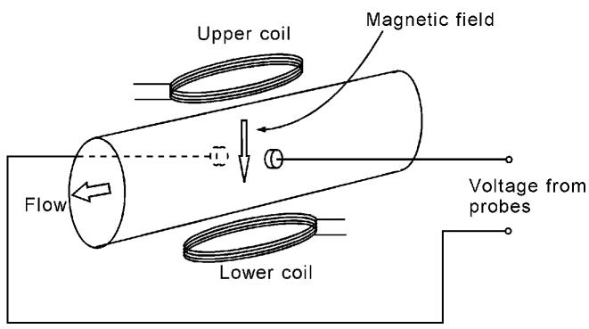
Principle (Faraday’s law):
Conducting fluid moves through magnetic field \(\mathbf{B}\).
Charges experience Lorentz force \(\mathbf{F} = q\mathbf{v} \times \mathbf{B}\).
Induces voltage across pipe:
\[ V \propto B \cdot V_{\text{flow}} \cdot D \]
Advantages:
- No moving parts, minimal pressure drop.
- Good for corrosive or dirty fluids (e.g., slurries, blood) as long as they conduct.
Summary / Key Points
- Motion: \(v(t) = dx/dt\), \(a(t) = d^{2}x/dt^{2}\); integrating acceleration yields velocity and position but is sensitive to drift.
- Vibration: sinusoidal motion \(x(t) = x_{0}\sin\omega t\) leads to \(a_{\text{peak}} = \omega^{2} x_{0}\); even small displacements can yield large accelerations at high frequencies.
- Shock: very large, short‑duration decelerations; average shock \(\bar{a} \approx \Delta v / T_{d}\) can be > 100 g.
- Spring–mass accelerometers: use \(ma = k\Delta x\); natural frequency \(f_{N} = (1/2\pi)\sqrt{k/m}\) and damping determine usable frequency range.
- Accelerometer types: potentiometric and LVDT for low‑frequency and DC; piezoelectric and variable‑reluctance for vibration and shock.
- Pressure: force per area; static vs dynamic; gauge vs absolute; head pressure \(p = \rho g h\).
- Pressure sensors: diaphragms, bellows, Bourdon tubes convert pressure to displacement; measured by LVDT, strain gauge, or potentiometer; solid‑state sensors integrate strain gauges and signal conditioning.
- Flow: volume, velocity, and mass/weight flow are interrelated by area and density; many sensors convert flow to pressure drop (or displacement) then to voltage.
- Liquid flow measurement: restriction devices (venturi, orifice, nozzle), pitot tubes, obstruction meters (rotameter, turbine), and magnetic flow meters each suit particular fluids and accuracy requirements.
Formulas Summary
Motion & Vibration
Velocity:
\[ v(t) = \frac{dx(t)}{dt} \tag{16} \]
Acceleration:
\[ a(t) = \frac{dv(t)}{dt} = \frac{d^{2}x(t)}{dt^{2}} \tag{17} \]
Integrating acceleration:
\[ v(t) = v(0) + \int_{0}^{t} a(\tau)\, d\tau \tag{18} \]
\[ x(t) = x(0) + \int_{0}^{t} v(\tau)\, d\tau \tag{19} \]
Vibration motion:
\[ x(t) = x_{0}\sin(\omega t) \tag{20} \]
\[ \omega = 2\pi f \tag{21} \]
\[ v(t) = \omega x_{0}\cos(\omega t) \tag{22} \]
\[ a(t) = -\omega^{2} x_{0}\sin(\omega t) \tag{23} \]
\[ a_{\text{peak}} = \omega^{2} x_{0} \tag{24} \]
Spring–Mass Accelerometer
Force balance:
\[ ma = k\Delta x \tag{25} \]
\[ a = \frac{k}{m} \Delta x \tag{26} \]
Natural frequency and transient:
\[ f_{N} = \frac{1}{2\pi}\sqrt{\frac{k}{m}} \tag{27} \]
\[ X_{T}(t) = X_{0} e^{-\alpha t}\sin(2\pi f_{N} t) \tag{28} \]
Seismic mass motion under vibration:
\[ \Delta x = -\frac{m x_{0}}{k}\omega^{2}\sin(\omega t) \tag{29} \]
Pressure
Gauge pressure:
\[ p_{g} = p_{\text{abs}} - p_{\text{at}} \tag{30} \]
Head pressure:
\[ p = \rho g h \tag{31} \]
\[ p = \rho_{w} h \tag{32} \]
Diaphragm force:
\[ F = (p_{2} - p_{1})A \tag{33} \]
Solid & Liquid Flow
Conveyor solid flow:
\[ Q = \frac{W R}{L} \tag{34} \]
Velocity/area relation:
\[ V = \frac{Q}{A} \tag{35} \]
Mass / weight flow:
\[ F = \rho Q \tag{36} \]
Restriction flow (orifice / venturi):
\[ Q = K\sqrt{\Delta p} \tag{37} \]